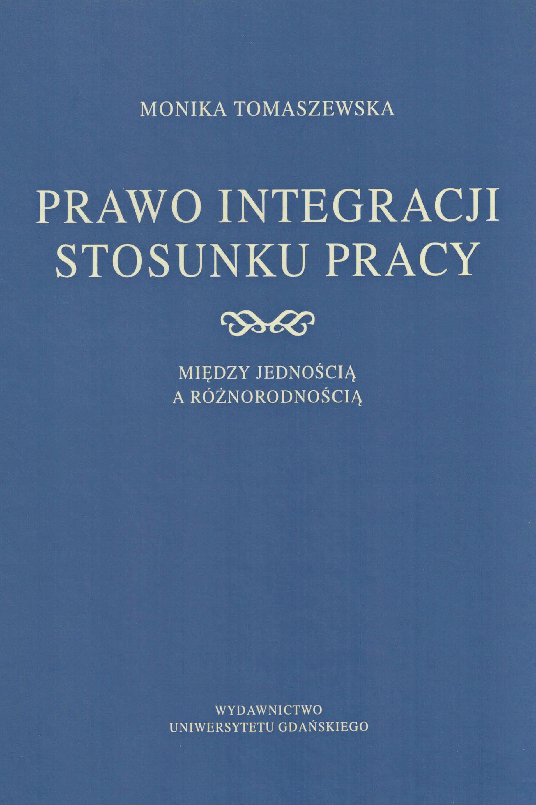
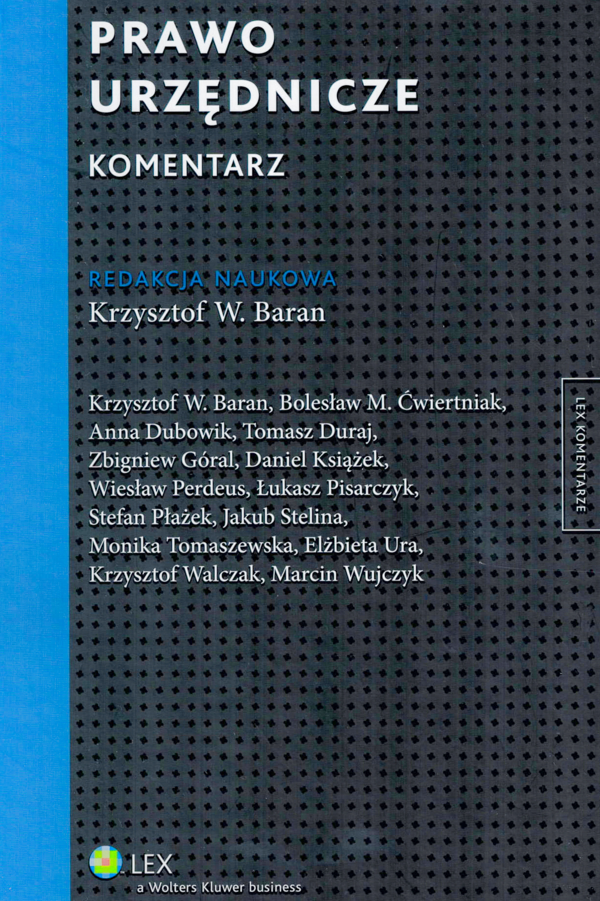
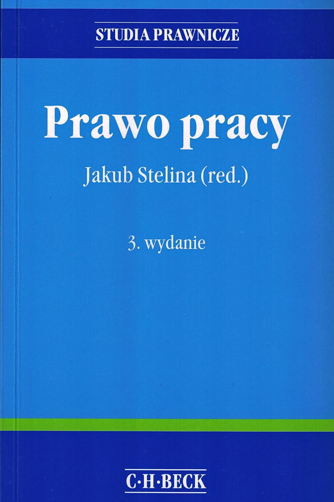
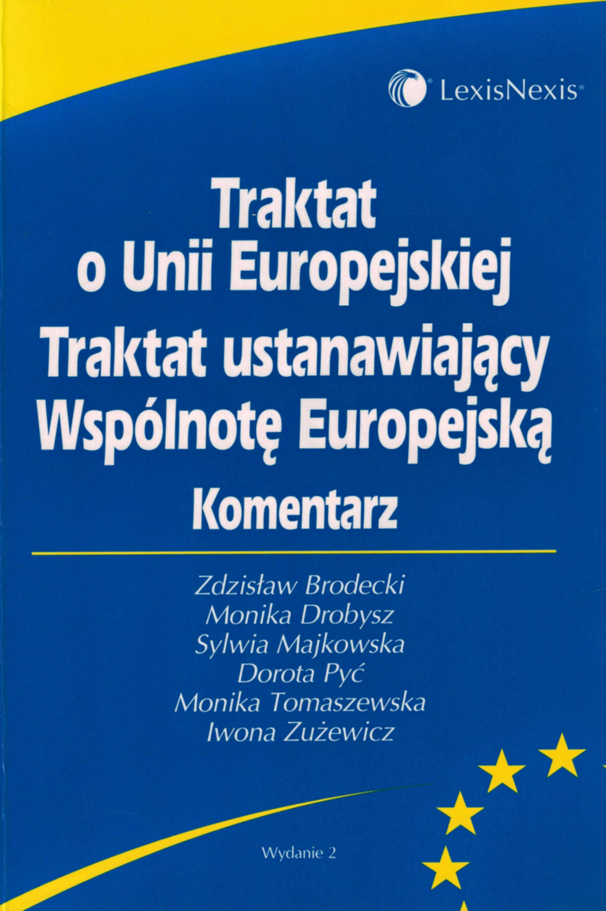

Publikacje

Prawo Integracji Stosunku Pracy Między Jednością A Różnorodnością

Prawo urzędnicze. Komentarz

Prawo pracy
(red. prof. UG dr hab. Jakub Stelina)
(red. prof. UG dr hab. Jakub Stelina)

Traktat o Unii Europejskiej. Traktat ustanawiający Wspólnotę Europejską. Komentarz
 Zasada wolności pracy w europejskim prawie wspólnotowym
Zasada wolności pracy w europejskim prawie wspólnotowym Zabezpieczenie społeczne
Zabezpieczenie społeczneStudia i artykuły
- Konwencja o pracy na morzu z 2006 r. (MLC) stan po ratyfikacji, Prawo Morskie t. XXVIII/2012, Polska Akademia Nauk w Gdańsku, ISSN 0860-7338, s. 136-145.
- Prawo do świadczeń z systemu zabezpieczenia społecznego w świetle prawa Unii Europejskiej, Z zagadnień zabezpieczenia społecznego nr 3/2011, Gdańsk 2011, s. 119-132 ISSN 2081-2310.
- Status Konwencji Międzynarodowej Organizacji Pracy o pracy na morzu z 2006 r. w prawie wspólnotowym, Prawo Morskie t. XXV/2009, Polska Akademia Nauk w Gdańsku, ISSN 0860-7338, s. 85-99.
- Kilka uwag o transgranicznym stosunku pracy i art. 39 TWE na tle orzeczeń prejudycjalnych ETS, (w:) Pytanie wstępne w orzecznictwie ETS. Funkcjonowanie procedury prejudycjalnej w Polsce, red. C. Mik, TNOiK, Toruń 2006, ISBN 978-83-7285-302-8; ISBN 83-7285-302-9, s. 285-306.
- Bezrobocie osób niepełnosprawnych, (w:) Rola prawa pracy i ubezpieczeń społecznych w przeciwdziałaniu bezrobociu, Fundacja Rozwoju Uniwersytetu Gdańskiego, Gdańsk 2005, ISBN 83-89786-63-X, s. 101-111.
- Tendencje liberalizacji żeglugi kabotażowej w Unii Europejskiej, Prawo Morskie t. XXI/2005, ISSN 0860-7338, s. 283-29.
- Zasady przestrzegania i stosowania europejskiego prawa wspólnotowego w polskim porządku prawnym - analiza systemu z punktu widzenia ochrony uprawnień podmiotów prywatnych, Fundacja Gospodarcza, Gdynia 2004, ISBN 83-87257-61-3, s. 1-16.
- Morskie aspekty prawa pracy, Prawo Morskie, t. XIX/2003, ISSN 0860-7338, s. 91-103.
- Swoboda zatrudnienia marynarzy w europejskim prawie wspólnotowym, Prawo Morskie t. XVIII/ 2003, Polska Akademia Nauk w Gdańsku, ISSN 0860-7338, s. 81-100.
- Znaczenie Karty Fundamentalnych Praw Unii Europejskiej we wspólnotowym porządku prawnym, Studia Europejskie, t. 3, Toruń, s. 31-41.
- Wpływ Międzynarodowej Organizacji Pracy na rozwój wspólnotowego prawa pracy i jej wkład w ochronę fundamentalnych praw pracowników, Prawo Morskie PAN, t. XIV, Gdańsk 2000.
- Wolność pracy w ujęciu myśli liberalnej i "państwa dobrobytu", Studia Europejskie, t. IV, Toruń 2000.